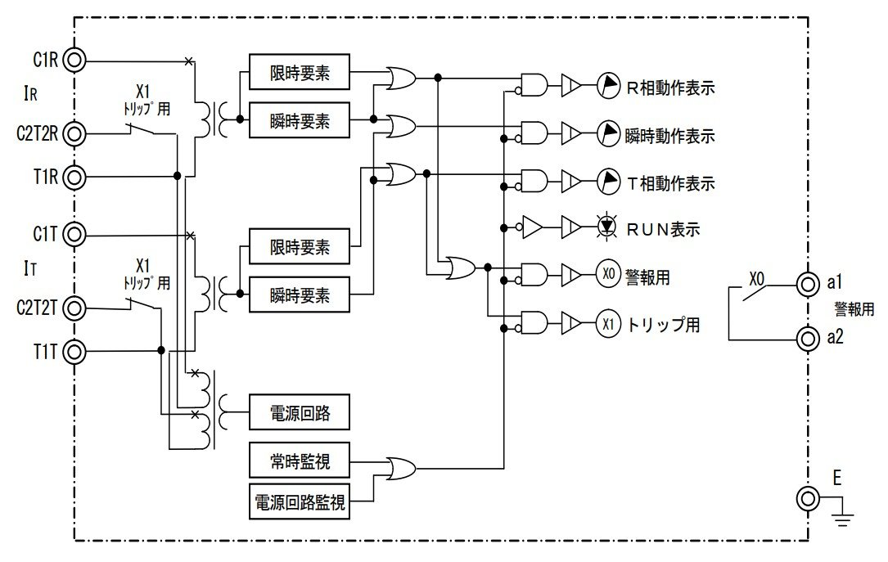

FIELD NOTE 012
停電点検は「停電OK」の合図だけで切らない
停電点検年次点検安全確認管理会社
停電点検で管理会社が立会いなどで間に入っている場合は、管理会社の指示を遵守する。
設置者側の社員から「停電OK」の合図が出ても、管理会社側で弱電設備やサーバーなどの停電前処理をしている可能性がある。関係者間の確認が完了する前に停電操作へ進まない。
また、停電立会いに不慣れな設置者側の社員が対応する場合にも注意。今回が初めて、手順をよく理解していない、各所への連絡が済んでいない状態で停電作業開始の指示が出ることもある。
停電操作前に、他業者の作業有無、エレベーターや機械式駐車場などで人が取り残される可能性がないか、関係者への連絡・停電前処理が完了しているかを確認する。
現場ごとの責任分界・指揮命令系統・停電手順を事前に確認し、誰の最終指示で停電操作を行うかを明確にする。
FIELD NOTE 011
リレー試験で小さい端子を掴むクリップ
保護継電器試験リレー試験試験器工具

リレー試験やるとき、これ便利。
試験器のクリップは徐々に劣化し取り付けにくくなる。特に保護継電器の裏端子はネジが小さいので余計に。
またOCR試験器は配線本体に重みがあるため、そのままだとクリップが外れやすい。配線をどこかに引っ掛けるなど、重みが端子に掛からないよう処置することもある。
自分は1mタイプで十分だった。試験器本体の配線は床置きにして、その先を1mの延長クリップだけにすると、配線の重みを気にせず小さいネジにもパチっと取り付けられた。
小さいネジでもガッチリ掴むので外れにくく、試験時の取り回しがかなり楽になった。
Amazonの商品ページ
FIELD NOTE 010
OVGRの150%試験は印加電圧に注意
OVGR零相電圧ZPD保護継電器試験
整定値10%でT-Eの動作電圧が約381Vなら、150%試験は約571V（381V×1.5）。普段あまり使わない高い試験電圧なので注意。
試験前に確認：①50Hz／60Hz ②試験器のレンジ・ツマミ ③ZPDのT-Eに印加する電圧
T-Eの試験電圧はメーカー・機種で異なる。特に三菱製は他社と同じ電圧を掛けない。取扱説明書・試験要領を確認する。
FIELD NOTE 009
このサイトの作り方
ChatGPTGitHubGitHub Pages
GitHubとChatGPTを連携
↓
独自ドメイン「memo-labo」のサブドメイン「ai.memo-labo」を割り当て
↓
ChatGPTに画像とテキストを放り込むと
↓
自動でWEBサイト構築＆更新
FIELD NOTE 008
OCR瞬時要素の最小動作電流試験
OCR瞬時要素最小動作電流
瞬時の整定値を最小に変更（例：40A⇒20A）
↓
限時動作をロック状態にしておく
↓
試験電流を0Aから20A付近まで速やかに上げる
↓
OCR動作⇒接点信号でOCR試験器停止
↓
試験器がストップした瞬間のメモリの針の位置を読む（整定モードだとズレる）
FIELD NOTE 007
電流引き外しOCRの単体試験で警報接点（a1-a2）の信号が拾えない場合
OCR単体試験警報接点

信号線
・R相⇒T1R
・T相⇒T1T
・com相⇒C2T2R or C2T2T
・接点⇔電圧は電圧モード
FIELD NOTE 006
どこに所属するかで待遇が全く違う
電験三種保安電工セコカン
電験三種に合格し、実務経験が積めても、その後どこに所属するかで待遇が全く違う。
例えば拘束時間。現場に直行直帰でOK、とりあえず一旦支社に来い、等。
電工もセコカンも保安も「どの会社を選ぶか」次第だが、肉体疲労と拘束時間が最も少ないのが保安。
70過ぎのジジイだらけなのが良い証拠。
FIELD NOTE 005
いきなり高所作業車
電気工事士見習い高所作業車
電気工事士の見習いだった頃「お前は会社の高所作業車に乗って現場に来い」と言われた時、本当に焦った。
MT車ほぼペーパー、なのにいきなり高所作業車。
事情を先輩に伝えたが、
「知らねーよ、んじゃその日は会社に早く来て練習しろ」
それで人轢いたらどうすんだよ。
こういう無茶振りの連続だった。
FIELD NOTE 004
電工と保安、人間のタイプが違った
電工保安職場環境
電工と保安で何が決定的に違ったかというと、人間のタイプ。
電工
- ノリが体育会系
- 喫煙率が高い
- 言葉が荒く攻撃的
- 指導が雑
保安
- ノリが理系オタク系
- 喫煙率が低い
- 言葉が比較的丁寧
- 指導が丁寧
FIELD NOTE 003
ただのポジショントーク
転職電工会社電験三種
「いい歳してそんな根性なしじゃどこ行っても通用せんぞ。自分に合う会社を選ぶんじゃなくて、自分が会社に合わせるんだよ」
「電験三種？そんなん持ってても保安なんか今は安くて月20万以下だぞ？」
結果、合う会社を見つけ、通用し、高待遇。
ようは、ただのポジショントーク。
FIELD NOTE 002
耐圧前に充電電流を把握する
耐圧試験充電電流接地PAS
耐圧試験前に、流れるはずの充電電流を把握しておく。
PAS単体なら数mA程度になることもある。試験器の電流計も、その電流が見えるレンジにする。
想定した充電電流が流れないなら、そのまま昇圧しない。接地・接続・試験回路を確認する。
充電電流は機器や試験条件で変わる。
FIELD NOTE 001
単体耐圧はクランプで充電電流を見る
耐圧試験PASUGSVCB
PAS、UGS、VCBなどを単体で耐圧すると、充電電流が小さい。
試験器の電流計で見えにくい時は、微小電流を測れるクランプで確認する。
特にVCB単体は充電電流が非常に小さくなることがあり、試験器の電流計ではほとんど変化が見えないこともある。
クランプは分解能・レンジ・周波数特性を確認。補助的な確認として使う。